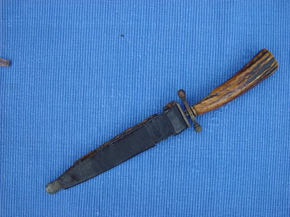
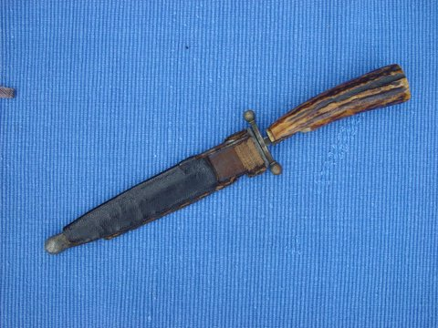
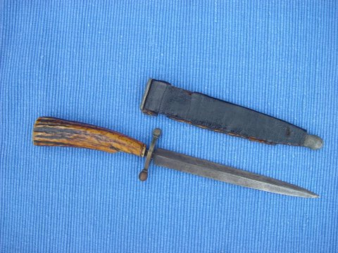
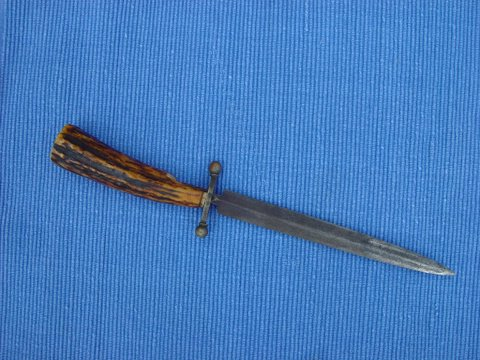

 
 
Above are photographs of "the dagger that belonged to [John] William Rudge that folklore has it on a Confederate blockade runner. It would be nice to know more about those circumstances. I also don't know when we got the knife but I think it was while my father was living." (Brenda nee Coble Robinson)